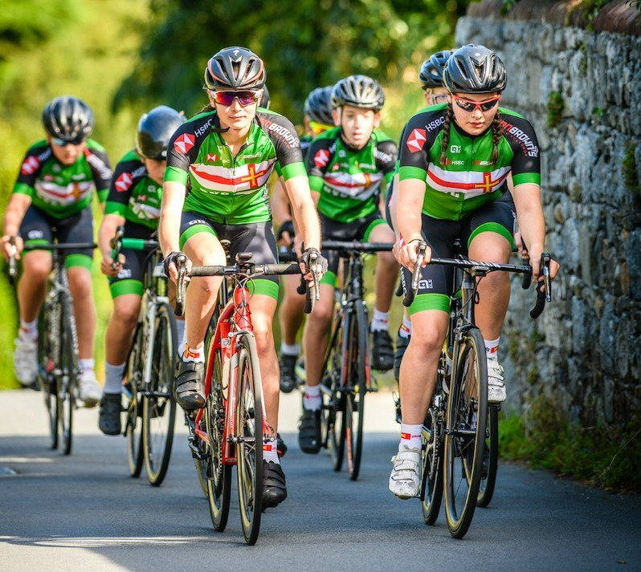

Guernsey Cycling Clubs
Guernsey Velo Club

The Guernsey Velo Club (GVC) was founded in 1968 and is one of the most advanced and rigorous cycling clubs on the island. It boasts multiple
different teams, each of which caters for a distinct type and level of cycling including mountain, road, racing, and endurance. The club hosts
weekly races and endurance cycles Sunday mornings, open to all members, as well as a regular sequence of competitive events in cross country and
road riding throughout the year.
To find out more, visit the GVC website or contact
President Mark Smith at markleesmith@yahoo.co.uk
or call him at 07839 264819.
Guernsey Rouleurs Cycling Club
Guernsey Rouleurs CC is a more relaxed group, ideal for keen cyclists who don't enjoy the intensity of competitive
racing. Don't be fooled, however, the GRCC remains one of the most prolific cycling clubs on the island and has much to offer to cyclists looking
for a challenge. It operates mainly on Sunday mornings, hosting weekly rides between 6:30 and 8:30. Furthermore, the club offers additional social
events with fun cycling related activities.
To find out more, visit the
Guernsey Rouleurs CC official website or contact the club at
guernseyrouleurs@gmail.com.